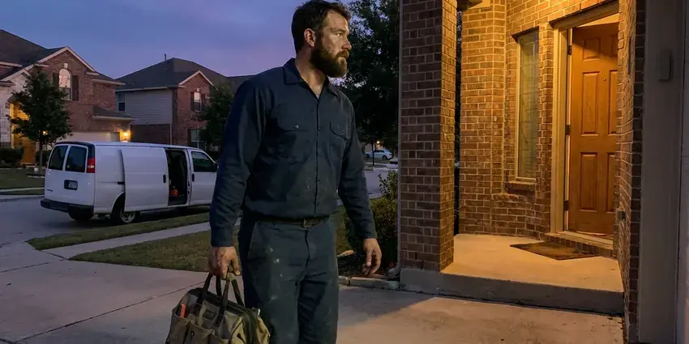

Water Leak Detection in Maili, HI
We test your meter, supply lines, fixtures and irrigation in Maili, HI to find water leaks you cannot see or hear.
- Irrigation and Pool Checks
- Advanced Technology
- Expert Plumbers
- Expert Technicians

Need Urgent Water Leak Detection in Maili, HI.
Don't let a hidden leak cause extensive damage to your home. Contact HKL Plumbing for prompt and reliable service.
Your Reliable Source for Water Leak Detection in Maili, HI
At HKL Plumbing, we understand the urgency of water leaks, especially where soil movement and foundation issues are common. We provide comprehensive water leak detection in Maili, HI, using modern equipment for precise diagnosis and efficient repair plans.
Our expertise includes:
- Slab leak detection and repair.
- Detect leaks in walls, ceilings and under floors.
- Yard and outdoor pipe leak detection.

Additional Plumbing Maintenance Services in Maili, HI
Our maintenance and specialty plumbing services in Maili, HI protect your home year-round and extend the life of every system.


Customers
Why Choose HKL Plumbing for Water Leak Detection in Maili, HI?
Soil that expands and contracts makes early leak detection crucial for protecting your home's foundation from shifting and cracking. Homes are commonly built on slabs or on post-and-pier foundations, and raised homes keep much of the plumbing exposed and easier to inspect.
- Local Expertise, Our team understands the specific plumbing challenges faced by homes in Maili, HI, including foundation types and pipe materials.
- Future Protection, Smart sensors and shutoff valves alert you to new leaks before damage grows.
- Damage Prevention, Early and accurate leak detection prevents serious damage to your property, preserving its value and preventing mold growth.
Citywide Coverage
HKL Plumbing proudly serves every neighborhood in and around Maili, with fast response times for your water leak detection needs. Whether you're in the heart of the city or a surrounding suburb, our technicians are ready to help.
Experienced Team
Our leak detection specialists at HKL Plumbing are highly trained and experienced in identifying even the most elusive leaks using proven techniques. They routinely update their skills to keep up with new technologies and methods.
Safety-First Approach
All water leak detection performed by HKL Plumbing in Maili is carried out with careful attention to detail and safety. We make sure our procedures protect your property and comply with all Hawaii regulations, preventing future issues.
Trusted Certified Maili Plumbing Services Professionals
At HKL Plumbing, we take pride in providing certified plumbing services throughout Maili, HI. Backed by leading industry credentials, our experienced plumbers combine technical skill with genuine customer care. Whether it is repair, installation, or maintenance, we follow strict safety and quality standards to deliver long-lasting results you can trust.
Call Us Now PHCC Plumbing Contractor Recognition
PHCC Plumbing Contractor Recognition Better Business Bureau (BBB) Accreditation
Better Business Bureau (BBB) Accreditation Angi Certified Pro
Angi Certified Pro ISO 9001 Quality Management Certification
ISO 9001 Quality Management CertificationComprehensive Water Leak Detection Services in Maili, HI
Toilet and Fixture Leak Detection in Maili, HI
Toilets are one of the most common sources of wasted water. A worn flapper or a fill valve that never shuts off can leak quietly around the clock. We use dye tests to find leaking toilets and check faucets, showers and supply lines for drips. These fixes are typically quick and save water right away.

Emergency Leak Detection Services in Maili, HI
When a burst pipe or sudden, major leak occurs, you need immediate assistance. HKL Plumbing offers emergency water leak detection services to respond quickly to urgent situations in Maili. Our rapid response team arrives equipped with professional tools to locate the leak source swiftly, helping to limit further water damage and restore safety to your home. We understand the stress of an emergency leak and work efficiently to resolve the problem, providing peace of mind to Hawaii residents.
Advanced Leak Detection Technology in Maili
HKL Plumbing invests in modern leak detection technology to provide the most accurate and non-invasive service possible in Maili. This includes high-resolution thermal cameras for detecting temperature changes caused by hidden moisture, sensitive acoustic sensors that listen for the faint sounds of escaping water, and video pipe inspection cameras for internal pipe diagnostics. These tools allow us to find leaks with minimal disruption to your property.
Hidden Wall & Ceiling Leak Detection in Maili, HI
Leaks behind walls or in ceilings can cause significant damage before they become visible, leading to stained drywall, peeling paint or a musty odor. These often stem from faulty pipe connections, old galvanized pipes or issues with shower pans and drains. Our technicians use moisture meters and infrared cameras to scan these areas, identifying elevated moisture levels and temperature differences that point to a hidden leak, minimizing the need for extensive wall demolition.
Water Meter Leak Testing in Maili
The water meter is the first and simplest leak test. With every fixture and appliance off, a moving leak indicator means water is escaping somewhere. We read the flow rate to estimate how many gallons are being lost. Then we shut off zones one at a time to see which part of the property is leaking.
Slab Leak Detection in Maili
Slab leaks are common in homes on shifting soil and moving foundations. These leaks occur in pipes beneath your concrete slab, often indicated by warm spots on the floor, sudden spikes in your water bill or the sound of running water when all fixtures are off. HKL Plumbing uses specialized acoustic listening devices and thermal imaging cameras to precisely locate these hidden leaks without destructive guesswork. Early detection is essential to preventing major foundation damage.
Leak Detection for PEX and Copper Pipes in Maili
Whether your plumbing system uses modern PEX tubing or traditional copper pipes, HKL Plumbing has the expertise to detect leaks in both materials. PEX, while flexible, can be vulnerable to damage from rodents or improper installation, while copper can corrode over time, especially with hard water. Our tools are effective across various pipe materials, ensuring accurate detection regardless of your home's plumbing type.

Main Service Line Leak Detection in Maili, HI
The line from the meter to your house carries full pressure and can leak underground for a long time. Wet soil, soft spots or oddly green patches of yard may be the only clues. We trace the line, listen for the leak and mark it for a targeted repair. Replacing old galvanized or polybutylene service lines is often recommended.
Water Leak Detection Near Me in Maili, HI
When your water bill spikes, you want quick answers from a team that is close by. Our technicians serve all of Maili and can usually test your system within a day. We arrive ready to find the leak and often repair it on the same visit.
When you search for "water leak detection near me" in Maili, HI, HKL Plumbing is your reliable local expert. We are deeply familiar with the plumbing systems and common leak issues affecting homes throughout the area. Our proximity means faster response times and technicians who understand local conditions.
HKL Plumbing at a Glance
- Licensed and insured plumbers serving Maili, HI
- Same-day appointments and 24/7 emergency response
- Upfront, flat-rate pricing before work begins
- 4.8-star rated by 529+ Hawaii customers
Maili Map
Maili Information
- Population
- 11,535
- Area codes
- Local
- Service area
- Maili and communities within 40 miles
- Nearby
- Nanakuli, Waianae, Makakilo, Kapolei
Water costs money in Maili, HI, and hard water, slab foundations and irrigation all make hidden leaks common, so finding them fast protects both your home and your budget. Most municipal water in Hawaii comes from volcanic groundwater aquifers and is usually soft to moderately hard, so heavy scale is less of a problem than in many places.
Expert Services
Trust our professionals for reliable HKL Plumbing solutions in Maili, HI.
Our Specialized Plumbing Services in Maili, HI
At HKL Plumbing, we provide a complete range of plumbing services across Maili, HI. From leak detection to full system installations, our team ensures fast, precise, and affordable service for both residential and commercial properties. Explore our core services below:


How Our Water Leak Detection Service Works in Maili, HI
We follow a systematic approach to accurately locate water leaks, giving you a precise diagnosis and effective repair strategy in Maili, HI.
Request a Quote
Call (808) 649-6718 and tell us about your water bill or what you have noticed. We schedule a visit and explain our detection fee up front.
Meter and Zone Tests
We check the meter flow rate and isolate the house, irrigation and pool to see which part is leaking. That focuses the search before we use locating tools.
Locate and Fix
We pinpoint the leak and explain repair options with prices. Most fixture and irrigation leaks can be repaired that same day.
Frequently Asked Questions About Water Leak Detection in Maili
The cost of water leak detection in Maili, HI usually ranges from $250 to $750, depending on the complexity and location of the leak. Factors like whether it's a slab leak, a wall leak or an outdoor pipe leak can affect the final price. This initial cost covers the specialized equipment and expertise needed to accurately pinpoint the problem before any repairs begin.
HKL Plumbing stands behind our work with comprehensive warranties on both our leak detection and subsequent repair services. The specific warranty details will be provided in writing before any work begins, for your peace of mind. We use quality materials and proven techniques for lasting solutions.
Yes. Repairs we complete carry a written workmanship warranty, and parts include manufacturer warranties. Smart valves also include their own coverage.
Small repairs usually do not require a permit, but service line replacements and repipes often do. Requirements vary by city and county. We take care of any permits needed.
If you suspect a slab leak, the first step is to call a professional like HKL Plumbing immediately. Avoid trying to dig or open up the slab yourself, as this can cause more damage. Turn off your main water supply if the leak is severe, and clear the area for our technicians.
We rely on professional equipment including acoustic listening devices, thermal imaging cameras, moisture meters, video pipe inspection cameras and sometimes tracer gas detection. These tools allow us to locate leaks non-invasively and with high accuracy.
Yes, hard water can contribute to plumbing issues over time. Mineral buildup can accelerate corrosion in pipes, especially older copper or galvanized lines, increasing the likelihood of leaks. Regular maintenance can help limit this.
Turn off all water inside and outside, then watch your meter for a few minutes. If the leak indicator moves, you have a leak. Adding food coloring to a toilet tank and checking the bowl after 15 minutes will reveal a leaking flapper.
What People Are Saying About Our Plumbing Experts?

Daniel K.
A pipe burst at 11 pm and they actually answered. The plumber showed up within the hour, shut everything down, and had us back to normal the next morning. Could not ask for more.
Emergency Plumbing · Makakilo, HI
Sofia M.
Two new toilets installed in one visit, no mess left behind, and the tech even adjusted a faucet he noticed was dripping. Fair pricing and really friendly.
Toilet Installation · Schofield Barracks, HILaura S.
I scheduled a water heater replacement, and the team made the process smooth and affordable. The new unit works perfectly, and they cleaned up after completing the job.
Water Heater Replacement · Makakilo, HI
Emily R.
I called HKL Plumbing for plumbing repair, and the technician was fast, polite, and thorough. They explained the problem clearly and fixed it the same day. I will definitely hire them again. Highly recommended!
Plumbing Repair · Schofield Barracks, HI
Mark T.
When our office needed drain cleaning, HKL Plumbing provided quick, reliable service. The plumber arrived on time and made sure every drain flowed perfectly before leaving. Very satisfied.
Drain Cleaning · Schofield Barracks, HI
Patricia H.
We had a slab leak that two other companies could not find. HKL Plumbing located it in under an hour, explained our options, and the price matched the quote to the dollar.
Slab Leak Repair · Nanakuli, HI